11. Barra de herramientas "Acotar".
Acotación. Introducción y acotaciones sencillas
Mediante
la acotación podemos comprobar las medidas de los objetos, longitud, radio,
diámetro, ángulo, etc. Vamos primero a realizar alguna acotación sencilla:
1. Dibuja una línea cualquiera.
2. Accede al menú Acotar - Lineal.
3. 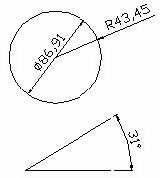Como primer punto de la cota, selecciona 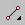 (punto final) de la barra de referencia a objetos y pincha en un extremo de la línea.
4. Como segundo punto de la acotación, pincha en y en el otro extremo de la línea.
5. Mueve un poco el ratón hasta que veas el texto perfectamente a la distancia que quieras y pincha clic para fijarlo.
6. Prueba a dibujar un círculo y acotarlo tanto en radio como en diámetro. Haz lo mismo con un ángulo:
Acotación. Crear un nuevo estilo de cota
Con AutoCAD, acotar un objeto es un
proceso prácticamente automatizado. Existen multitud de formas de acotación y
lo que haremos ahora será definir un estilo personal de acotación para
utilizarlo de aquí en adelante.
1. Accede al menú Formato - Estilo de cota. Te aparecerá un cuadro de diálogo.
2. Pincha en el botón Nuevo.
3. Escribe el nombre Personal y pulsa en Continuar.
Nos encontramos en el cuadro de diálogo de creación de cotas. Desde este cuadro puedes cambiar algún parámetro y observar cómo afecta al aspecto que tendrá la cota (imagen de la derecha). Nosotros vamos a preparar un estilo especial.
4. Echa una ojeada a cada ficha superior para familiarizarte con las diferentes opciones.
5. Accede a la pestaña Texto e introduce un altura de texto de 8.
6. En Ubicación del texto elige Centrado.
7. En Estilo de texto deberás crear un nuevo etilo llamado Texto de cota con letra Arial de 8 puntos.
8. Accede a la pestaña Líneas y flechas y cambia el tamaño de la flecha a 10 puntos.
9. En la pestaña Unidades principales configura dos decimales.
10. Acepta el nuevo estilo.
11. Activa la rejilla y el forzado de coordenadas.
12. Crea un triángulo como el que sigue. No te preocupes de las medidas:
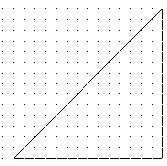
13. Accede a Acotar - Alineada.
14. Utilizando los puntos finales, acota la línea izquierda:
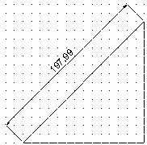
15. Haz lo mismo con las dos líneas y el ángulo:
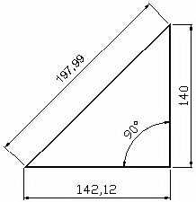
Ver y modificar las propiedades de la cota
1. Selecciona con un clic cualquier texto de cota.
2. Pulsa el botón derecho del ratón y selecciona la opción Propiedades.
Desde este completo menú podemos modificar cualquier característica de la cota; desde sus detalles hasta el texto, estilo, color, etc.
Crear acotaciones rápidas
Este método agilizar las múltiples
acotaciones. Crearemos una serie de cotas contínuas que acotarán la parte
inferior del triángulo, el espacio entre el triángulo y la línea, y hasta la
longitud de la propia línea:
1. Borra la cota inferior del triángulo
2. Dibuja una línea recta y selecciónala junto a la línea inferior del triángulo:
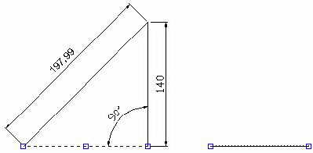
3. Selecciona Acotar - Cota rápida.
4. Selecciona N para la opción Contínua.
5. Baja un poco el cursor y pulsa clic:
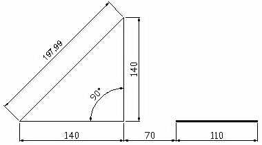
1. Dibuja un círculo
2. Accede a Acotar - Directriz.
3. Marca la línea del círculo como punto de directriz.
4. Como siguiente punto, estira un poco el ratón hacia arriba y hacia la derecha:
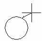
5. Pulsa clic para fijar el segundo punto.
6. Estira otro poco hacia la derecha el ratón y pulsa otro clic.
7. Estira más hacia la derecha y pulsa el último clic para fijar el último punto.
8. Como anchura del texto, escribe 5 y pulsa Intro.
9. Escribe cualquier texto de ejemplo y pulsa Intro.
10. Pulsa el último Intro para fijar.
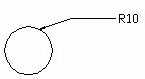
1. Accede al menú Acotar - Modificar.
|
Variable |
Valor por defecto |
Apariencia |
Descripción |
Nuevo valor |
Apariencia |
|
dimaso |
Act |
Todas las parte de la cota forman una única entidad |
Cota asociativa |
Des |
Todas las partes son entidades separadas |
|
dimscale |
1.00 |
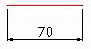 |
Cambia el tamaño del texto y la flecha, pero no el valor. |
2.00 |
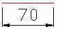 |
|
dimasz |
5 |
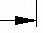 |
Tamaño de la flecha |
10 |
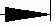 |
|
dimtad |
0 |
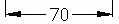 |
Coloca el texto sobre la línea de cota |
1 |
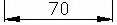 |
|
dimtxt |
5 |
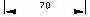 |
Altura del texto |
8 |
|
|
dimtih |
Act |
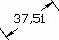 |
Controla el ángulo del texto |
Des |
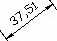 |
2. Prueba a escribir el nombre de alguna variable de la tabla, cambiar su valor y aplicarla a alguna cota para comprobar su efecto.